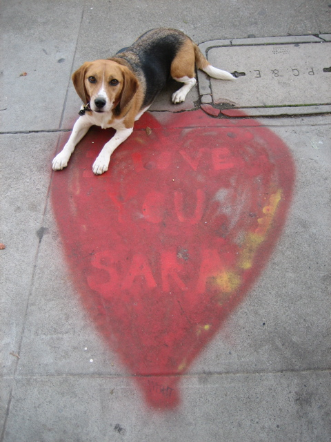

<--Previous Up Next-->

I love you Sara
Usually we skip A-loves-B hearts on the sidewalk, because there are so many of them, but we had to make an exception for this exuberant example on 25th St. between Anza and Balboa. Taken from the front steps of the building, as Sara was supposed to have seen it, no doubt.